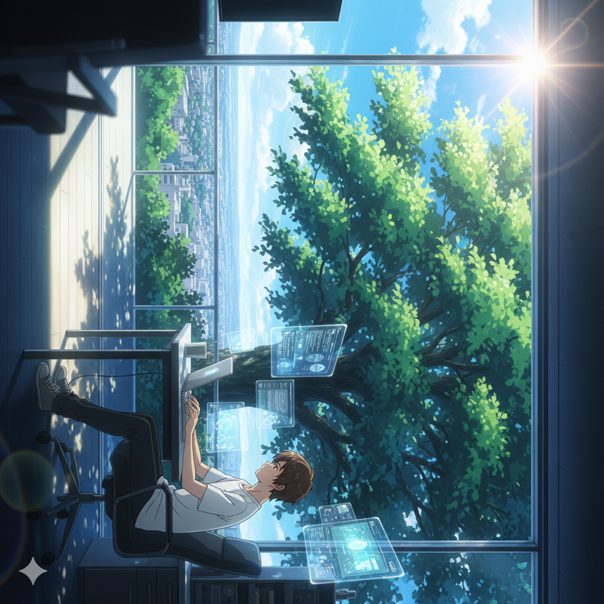

啓 App Lab (KEI App Lab)は、テクノロジーという光を用いて「日常の不便を解き明かし、心の高鳴りを呼び起こす」ことを使命としたクリエイティブ・ラボです。私たちは、単にプログラムを組む集団ではありません。ユーザーの隣に立ち、まだ見ぬ便利さと楽しさの扉を一つずつ「啓く」パートナーでありたいと考えています。

私たちの最大の強みは、世代を超えた「多角的な視点」にあります。日々の生活の中で見落とされがちな微細なニーズを捉える鋭い観察眼と、それを実現するための最先端のコンピュータ理工学。この二つが融合することで、既存の枠組みに捉われない革新的なプロダクトが生まれます。
プロダクトの一環である「FreeCallApp」をはじめ、私たちが提供するツールはすべて「徹底的なユーザー体験の最適化」から設計されています。複雑なものをシンプルに。高価なものを身近に。デジタルという冷たい技術に、人間の温かな気配りを注ぎ込むことで、使うたびに発見がある利便性を追求しています。
また、私たちは「遊び」が持つ根源的なエネルギーを信じています。ゲーム開発プロジェクトでは、日常の延長線上にある驚きや、知的好奇心を刺激する体験を追求しています。ツールが時間を「節約」するものであるならば、ゲームは時間を「豊か」にするもの。私たちはその両輪で、人々のライフスタイルを照らします。
啓 App Lab (KEI App Lab)は、常に研究者（Lab）としての探究心を忘れず、一歩先の未来が今日より少しだけ明るく、楽しくなるような、そんな「光」となるアプリを届けてまいります。
啓 App Lab (KEI App Lab) is a creative laboratory whose mission is to "unravel the inconveniences of daily life and awaken the excitement of the heart" using the light of technology. We are more than just a group of programmers. We aspire to be a partner that stands beside the user, "opening" the doors to unseen convenience and joy one by one.
Our greatest strength lies in our "multi-generational perspective." A keen eye for observation that captures subtle needs often overlooked in daily life, combined with cutting-edge computer science to realize them. This fusion gives birth to innovative products that transcend existing frameworks.
Starting with 'FreeCallApp,' which is part of our product lineup, every tool we provide is designed through 'thorough optimization of the user experience.' Turning complexity into simplicity. Bringing expensive services within reach. By infusing the cold technology of the digital realm with human warmth and attentiveness, we pursue convenience that offers new discoveries with every use.
We believe in the fundamental energy of "play." Through our game development projects, we seek to provoke intellectual curiosity and create surprises that extend beyond daily life. If a tool is meant to "save" time, a game is meant to "enrich" it. We illuminate lifestyles through these two pillars.
As 啓 App Lab (KEI App Lab), we will never forget our inquisitive spirit as researchers. We are dedicated to delivering applications that act as a "light," making the future one step ahead just a little brighter and more enjoyable than today.
啓 App Lab (KEI App Lab) ist ein kreatives Labor, dessen Mission es ist, "die Unannehmlichkeiten des Alltags zu enträtseln und die Begeisterung des Herzens zu wecken", indem wir das Licht der Technologie nutzen. Wir sind mehr als nur eine Gruppe von Programmierern. Wir möchten ein Partner sein, der an der Seite der Nutzer steht und die Türen zu ungekannter Bequemlichkeit und Freude Stück für Stück "öffnet".
Unsere größte Stärke liegt in unserer "generationenübergreifenden Perspektive". Ein scharfer Beobachtungssinn, der subtile Bedürfnisse einfängt, die im Alltag oft übersehen werden, kombiniert mit modernster Informatik, um diese zu verwirklichen. Diese Verschmelzung bringt innovative Produkte hervor, die über bestehende Rahmenbedingungen hinausgehen.
Angefangen bei der 'FreeCallApp', die Teil unserer Produktpalette ist, wird jedes unserer Tools durch 'gründliche Optimierung der Benutzererfahrung' entwickelt. Komplexes einfach machen. Teure Dienstleistungen greifbar machen. Indem wir der kalten digitalen Technologie menschliche Wärme und Aufmerksamkeit einhauchen, streben wir nach einer Bequemlichkeit, die bei jeder Nutzung neue Entdeckungen bietet.
Wir glauben an die fundamentale Energie des "Spielens". Durch unsere Spieleentwicklungsprojekte suchen wir nach Überraschungen und intellektueller Neugier, die über den Alltag hinausgehen. Wenn ein Werkzeug dazu dient, Zeit zu "sparen", dann ist ein Spiel dazu da, sie zu "bereichern". Mit diesen beiden Säulen erhellen wir den Lebensstil.
Als 啓 App Lab (KEI App Lab) werden wir unseren Forschergeist nie vergessen. Wir widmen uns der Bereitstellung von Anwendungen, die als "Licht" fungieren und die Zukunft einen Schritt voraus ein wenig heller und angenehmer machen als das Heute.
啓 App Lab (KEI App Lab) est un laboratoire créatif dont la mission est de "démêler les désagréments de la vie quotidienne et d'éveiller l'enthousiasme du cœur" en utilisant la lumière de la technologie. Nous sommes bien plus qu'un simple groupe de programmeurs. Nous aspirons à être un partenaire aux côtés de l'utilisateur, "ouvrant" une à une les portes vers une commodité et une joie inédites.
Notre plus grande force réside dans notre "perspective multigénérationnelle". Un sens aigu de l'observation qui capte les besoins subtils souvent négligés au quotidien, associé à une informatique de pointe pour les réaliser. Cette fusion donne naissance à des produits innovants qui dépassent les cadres existants.
À commencer par 'FreeCallApp', qui fait partie de notre gamme de produits, chaque outil que nous proposons est conçu grâce à une 'optimisation minutieuse de l'expérience utilisateur'. Rendre la complexité simple. Mettre les services coûteux à portée de main. En insufflant à la technologie froide du monde numérique une chaleur et une attention humaines, nous recherchons une commodité qui offre de nouvelles découvertes à chaque utilisation.
Nous croyons en l'énergie fondamentale du "jeu". À travers nos projets de développement de jeux, nous cherchons à susciter la curiosité intellectuelle et à créer des surprises qui prolongent le quotidien. Si un outil est fait pour "gagner" du temps, un jeu est fait pour l'"enrichir". Nous illuminons les modes de vie grâce à ces deux piliers.
En tant que 啓 App Lab (KEI App Lab), nous n'oublierons jamais notre esprit d'investigation en tant que chercheurs. Nous nous engageons à fournir des applications qui agissent comme une "lumière", rendant l'avenir un peu plus brillant et plus agréable qu'aujourd'hui.
啓 App Lab (KEI App Lab) es un laboratorio creativo cuya misión es "desentrañar los inconvenientes de la vida diaria y despertar el entusiasmo del corazón" utilizando la luz de la tecnología. Somos más que un simple grupo de programadores. Aspiramos a ser un socio que acompañe al usuario, "abriendo" una a una las puertas hacia una comodidad y alegría nunca antes vistas.
Nuestra mayor fortaleza reside en nuestra "perspectiva multigeneracional". Un agudo sentido de la observación que capta necesidades sutiles a menudo pasadas por alto en la vida cotidiana, combinado con la informática de vanguardia para hacerlas realidad. Esta fusión da a luz a productos innovadores que trascienden los marcos existentes.
Empezando por 'FreeCallApp', que forma parte de nuestra línea de productos, cada herramienta que ofrecemos está diseñada a través de una 'optimización exhaustiva de la experiencia del usuario'. Convertir la complejidad en simplicidad. Poner los servicios costosos al alcance de la mano. Al infundir la fría tecnología del ámbito digital con calidez y atención humana, perseguimos una comodidad que ofrece nuevos descubrimientos con cada uso.
Creemos en la energía fundamental del "juego". A través de nuestros proyectos de desarrollo de juegos, buscamos provocar la curiosidad intelectual y crear sorpresas que se extiendan más allá de la vida diaria. Si una herramienta está destinada a "ahorrar" tiempo, un juego está destinado a "enriquecerlo". Iluminamos los estilos de vida a través de estos dos pilares.
Como 啓 App Lab (KEI App Lab), nunca olvidaremos nuestro espíritu inquisitivo como investigadores. Nos dedicamos a entregar aplicaciones que actúen como una "luz", haciendo que el futuro, a un paso de distancia, sea un poco más brillante y agradable que hoy.